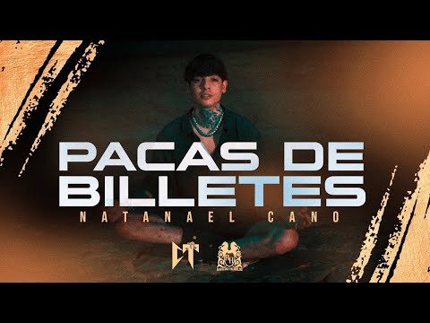

Pacas De Billetes - Nata Montana
Pacas de billetes y una mente que las puede
Desde plebes sabíamos que íbamos pa este level
Me cambió la vida, nos cambió ya el modo
Nunca para abajo, siempre para arriba
No me hizo menos ni un cabrón, nunca pudieron.

Esta cancion me gusta
porque habla de como a
una persona le gusta el
dinero y quiere salir a
prosperar desde cero.